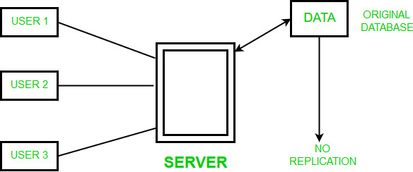

Data Replication is the process of storing data in more than one site or node. It is useful in improving the availability of data. It is simply copying data from a database from one server to another server so that all the users can share the same data without any inconsistency. The result is a distributed database in which users can access data relevant to their tasks without interfering with the work of others.
Data replication encompasses duplication of transactions on an ongoing basis, so that the replicate is in a consistently updated state and synchronized with the source.However in data replication data is available at different locations, but a particular relation has to reside at only one location.
There can be full replication, in which the whole database is stored at every site. There can also be partial replication, in which some frequently used fragment of the database are replicated and others are not replicated.
Types of Data Replication –
- Transactional Replication – In Transactional replication users receive full initial copies of the database and then receive updates as data changes. Data is copied in real time from the publisher to the receiving database(subscriber) in the same order as they occur with the publisher therefore in this type of replication, transactional consistency is guaranteed. Transactional replication is typically used in server-to-server environments. It does not simply copy the data changes, but rather consistently and accurately replicates each change.
- Snapshot Replication – Snapshot replication distributes data exactly as it appears at a specific moment in time does not monitor for updates to the data. The entire snapshot is generated and sent to Users. Snapshot replication is generally used when data changes are infrequent. It is bit slower than transactional because on each attempt it moves multiple records from one end to the other end. Snapshot replication is a good way to perform initial synchronization between the publisher and the subscriber.
- Merge Replication – Data from two or more databases is combined into a single database. Merge replication is the most complex type of replication because it allows both publisher and subscriber to independently make changes to the database. Merge replication is typically used in server-to-client environments. It allows changes to be sent from one publisher to multiple subscribers.
Replication Schemes –
1. Full Replication – The most extreme case is replication of the whole database at every site in the distributed system. This will improve the availability of the system because the system can continue to operate as long as atleast one site is up.

Advantages of full replication –
- High Availability of Data.
- Improves the performance for retrieval of global queries as the result can be obtained locally from any of the local site.
- Faster execution of Queries.
Disadvantages of full replication –
- Concurrency is difficult to achieve in full replication.
- Slow update process as a single update must be performed at different databases to keep the copies consistent.
- The data can be easily recovered.
- Concurrency can be achieved in no replication.
- Since multiple users are accessing the same server, it may slow down the execution of queries.
- The data is not easily available as there is no replication.
- The number of copies of the fragment depends upon the importance of data.
- To provide a consistent copy of data across all the database nodes.
- To increase the availability of data.
- The reliability of data is increased through data replication.
- Data Replication supports multiple users and gives high performance.
- To remove any data redundancy,the databases are merged and slave databases are updated with outdated or incomplete data.
- Since replicas are created there are chances that the data is found itself where the transaction is executing which reduces the data movement.
- To perform faster execution of queries.
- More storage space is needed as storing the replicas of same data at different sites consumes more space.
- Data Replication becomes expensive when the replicas at all different sites need to be updated.
- Maintaining Data consistency at all different sites involves complex measures.
2. No Replication – The other case of replication involves having No replication – that is, each fragment is stored at only one site.

Advantages of No replication –
Disadvantages of No replication –
3. Partial Replication – In this type of replication some fragments of the database may be replicated whereas others may not. The number of copies of the fragment may range from one to the total number of sites in the distributed system. The description of replication of fragments is sometimes called the replication schema.

Advantages of Partial replication –
ADVANTAGES OF DATA REPLICATION – Data Replication is generally performed to:
DISADVANTAGES OF DATA REPLICATION –